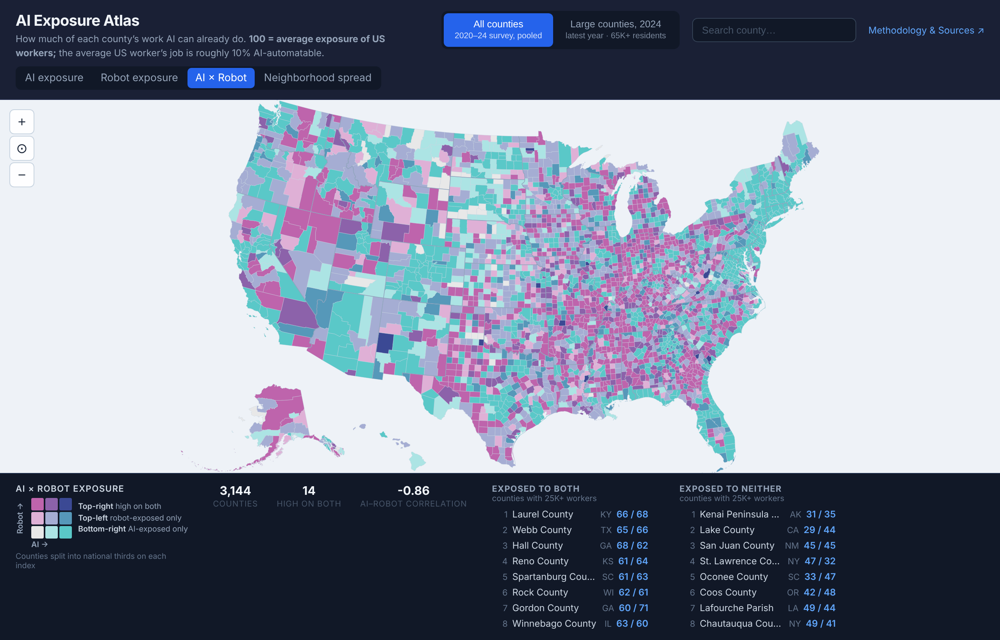

A county and census tract-based atlas studying potential for labor automation by job type.
As AI capabilities have advanced over the past few years, public discourse has increasingly sought to understand the impact AI is having or will have on jobs. Is employment down? Is there a K-shaped labor market, separated by age? Which workers are feeling the effects most?
Typically, these questions are posed at an economy-wide level. If disruption is going to be differentiated by worker type, however, that could have implications for how those effects are experienced at the local level. Akin to prior disruptions, like the off-shoring of labor in a company town, a disproportionate share of workers in a particular locality or state being disrupted could shock tax bases and have profound effects on local communities.
Inspired by the Opportunity Atlas, which has been praised for highlighting the geographic aspects of economic effects, I sought to visualize the potential for these locally-relevant labor market effects.
The AI Exposure Atlas attempts to capture the potential for labor market disruption on a per-county level. For each county, I calculated a score that represents the level of potential disruption – roughly a measure of how many of the tasks required by the jobs that people in that county do are already automatable by AI. This does not necessarily mean those tasks have been automated for every job; rather the measure is “automatability” as defined by the capabilities of today's AI systems.
This analysis covers both “AI disruption,” covering white collar-oriented tasks automatable by digital-only AI systems, and “Robotics disruption,” covering physical world work where today's robotic systems (increasingly powered by frontier, general-purpose AI models) can take on the task.
More details below 👇.
Occupation exposure. Both scores start from Anthropic's Economic Index. Its AI measure rates each occupation by how much of its work shows up in real Claude usage. A separate September 2026 release rates each occupation by how much of its physical work today's robots can already do. I chose these sources for two reasons. First, they rest on observed use and demonstrated capability, rather than expert guesses or academic (often contrived) benchmarks about what might be automatable someday. Second, both come from the same framework, so the two scores are comparable.
Local workforce. The Census Bureau's American Community Survey (2020–24) counts how many residents of each county and census tract work in each of 25 occupation groups. To my knowledge, it is the only public source with this depth of geographic detail.
Combining them. Each locality's score is a shift-share (Bartik) index. In plain terms, it is the average exposure of the jobs local residents hold, weighted by how many residents hold each job. A county full of software developers scores high on AI. A county full of machine operators scores high on robots. Both indices use the same workforce weights, so any difference between them comes from the occupations, not the data. The atlas covers 3,144 counties and roughly 83,000 census tracts.
Reading the scores. Both indices are scaled so that 100 = average exposure of US workers. A county with an index score of 130 has a job mix 30% more exposed than the national average, while a county with a score of 70 is 30% less exposed than the average.
The AI score also has an absolute reading. Loosely, Anthropic's occupation score is the share of a job's workday spent on tasks AI can already do, based on real Claude work usage. On that reading, the average US worker's job is roughly 10% AI-automatable. As an example, Arlington County, Virginia is the most exposed large county with an index score of 147. This suggests jobs in Arlington are about 15% automatable (10% × 1.47).
Note that the robotics score has no “already automated” percentage reading.
Where AI exposure is high, robot exposure tends to be low, and vice-versa. Almost no one lives somewhere that ranks high on both.

The two maps are roughly mirror images. At −0.86 across counties, there is a strong anti-correlation between places with high AI exposure and robotics exposure.
To make sure this pattern reflects real differences between places, and is not a side effect of how the scores are built, I ran a simple test. I shuffled the robot scores at random among the 25 occupation groups, so that each group got another group's score, and rebuilt every county's robot index. With shuffled scores, the correlation between AI and robot exposure is close to zero. So the strong negative correlation comes from which jobs AI and robots can actually do, not from the method.
Robots cover more land; AI covers more people. By separating counties into the top third, middle third, and bottom third of exposure on each measure, we see that the robot-heavy, AI-light group covers 793 counties but only 6% of US workers. The AI-heavy, robot-light group, on the other hand, has 820 counties and 72% of workers. Shaded by county, robots look like the bigger story. Counted by people, AI is. This aligns with the conception of the US economy as being heavy on knowledge work.
Relationship to income. We can also rank census tracts by median household income. AI exposure rises steadily, from 82 in the poorest tracts to 121 in the richest. Robot exposure falls just as steadily, from 129 to 70. Education shows the same split. The share of adults with a bachelor's degree correlates +0.76 with AI exposure and −0.86 with robot exposure.
| Tract income fifth | Median household income | AI exposure (US avg = 100) | Robot exposure (US avg = 100) |
|---|---|---|---|
| Poorest | $44k | 82 | 129 |
| 2nd | $62k | 87 | 119 |
| 3rd | $77k | 94 | 108 |
| 4th | $98k | 104 | 93 |
| Richest | $140k | 121 | 70 |
Where. Among large counties, AI exposure peaks in Arlington (147) and Fairfax, Virginia; Washington, DC; San Francisco; Santa Clara; and fast-growing suburbs like Collin County, Texas. Robot exposure peaks in California's Central Valley (Merced at 138, plus Tulare, Stanislaus, and Kern); Yakima, Washington; and logistics hubs like Clayton County, Georgia.
Two job groups do most of the work on the robot side. Factory work is the biggest driver nationally. Production jobs make up 11% of the workforce in robot-heavy counties and 4% in AI-heavy ones. Farming explains the peaks above. Farming, fishing, and forestry has the highest robot score of any job group, and it accounts for 8–11% of workers in Merced, Tulare, and Yakima. Across all robot-heavy counties, though, farm jobs are only 2.5% of workers (0.3% in AI-heavy ones), so nationally farming matters less than factory work.
Why this matters. “Automation risk” is not one problem. The places exposed to AI and the places exposed to robots differ in industry, income, and education. A single combined index would average the two together and miss subtleties that could inform how our governments should respond to imminent disruption.
In progress: a detailed-occupation index. The biggest limitation above is the use of 25 broad occupation groups. I'm now working on a version with about 525 detailed occupations from the Census Bureau's microdata (PUMS). This should give a more granular view of exposure.
Under consideration.
AI disclosure. Claude assisted with data extraction, analysis, visuals, and drafting this write-up. I set strategic direction, reviewed, and edited the outputs.